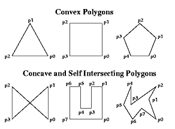

new Polygon(x, y, points)
a polygon Object.
Please do note that melonJS implements a simple Axis-Aligned Boxes collision algorithm, which requires all polygons used for collision to be convex with all vertices defined with clockwise winding. A polygon is convex when all line segments connecting two points in the interior do not cross any edge of the polygon (which means that all angles are less than 180 degrees), as described here below :

A polygon's `winding` is clockwise iff its vertices (points) are declared turning to the right. The image above shows COUNTERCLOCKWISE winding.
Please do note that melonJS implements a simple Axis-Aligned Boxes collision algorithm, which requires all polygons used for collision to be convex with all vertices defined with clockwise winding. A polygon is convex when all line segments connecting two points in the interior do not cross any edge of the polygon (which means that all angles are less than 180 degrees), as described here below :
A polygon's `winding` is clockwise iff its vertices (points) are declared turning to the right. The image above shows COUNTERCLOCKWISE winding.
Parameters:
| Name | Type | Description |
|---|---|---|
x |
Number | origin point of the Polygon |
y |
Number | origin point of the Polygon |
points |
me.Vector2d[] | array of vector defining the Polygon |
- Source:
- poly.js, line 23
Extends
Classes
Members
-
<private, static> _bounds :me.Rect
-
The bounding rectangle for this shape
Type:
- Source:
- poly.js, line 37
-
<static> points :me.Vector2d[]
-
Array of points defining the Polygon
Note: If you manually change `points`, you **must** call `recalc`afterwards so that the changes get applied correctly.Type:
- me.Vector2d[]
- Source:
- poly.js, line 46
-
<static> pos :me.Vector2d
-
origin point of the Polygon
Type:
- Source:
- poly.js, line 28
Methods
-
<static> clone() → {me.Polygon}
-
clone this Polygon
- Source:
- poly.js, line 273
Returns:
new Polygon- Type
- me.Polygon
-
<static> containsPoint(x, y) → {boolean}
-
check if this Polygon contains the specified point
(Note: it is highly recommended to first do a hit test on the corresponding
bounding rect, as the function can be highly consuming with complex shapes)Parameters:
Name Type Description xNumber x coordinate yNumber y coordinate - Source:
- poly.js, line 209
Returns:
true if contains- Type
- boolean
-
<static> containsPointV(point) → {boolean}
-
check if this Polygon contains the specified point
Parameters:
Name Type Description pointme.Vector2d - Source:
- poly.js, line 197
Returns:
true if contains- Type
- boolean
-
<static> getBounds() → {me.Rect}
-
returns the bounding box for this shape, the smallest Rectangle object completely containing this shape.
- Source:
- poly.js, line 237
Returns:
this shape bounding box Rectangle object- Type
- me.Rect
-
<static> recalc()
-
Computes the calculated collision polygon. This **must** be called if the `points` array, `angle`, or `offset` is modified manually.
- Source:
- poly.js, line 133
-
<static> rotate(angle) → {me.Polygon}
-
Rotate this Polygon (counter-clockwise) by the specified angle (in radians).
Parameters:
Name Type Description angleNumber The angle to rotate (in radians) - Source:
- poly.js, line 78
Returns:
Reference to this object for method chaining- Type
- me.Polygon
-
<static> scale(x, y) → {me.Polygon}
-
Scale this Polygon by the given scalar.
Parameters:
Name Type Argument Default Description xNumber yNumber <optional>
x - Source:
- poly.js, line 99
Returns:
Reference to this object for method chaining- Type
- me.Polygon
-
<static> scaleV(v) → {me.Polygon}
-
Scale this Polygon by the given vector
Parameters:
Name Type Description vme.Vector2d - Source:
- poly.js, line 121
Returns:
Reference to this object for method chaining- Type
- me.Polygon
-
<static> setShape(x, y, points)
-
set new value to the Polygon
Parameters:
Name Type Description xNumber position of the Polygon yNumber position of the Polygon pointsme.Vector2d[] array of vector defining the Polygon - Source:
- poly.js, line 61
-
<static> translate(x, y) → {me.Polygon}
-
translate the Polygon by the specified offset
Parameters:
Name Type Description xNumber x offset yNumber y offset - Source:
- poly.js, line 167
Returns:
this Polygon- Type
- me.Polygon
-
<static> translateV(v) → {me.Polygon}
-
translate the Polygon by the specified vector
Parameters:
Name Type Description vme.Vector2d vector offset - Source:
- poly.js, line 183
Returns:
this Polygon- Type
- me.Polygon
-
<static> updateBounds() → {me.Rect}
-
update the bounding box for this shape.
- Source:
- poly.js, line 248
Returns:
this shape bounding box Rectangle object- Type
- me.Rect